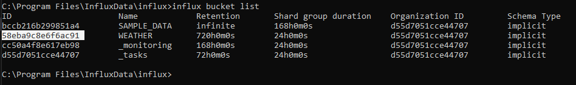

Die CLI ist einfach zu bedienen und perfekt für Entwickler, die normalerweise nicht GUIs bevorzugen.
Beispiel:
Die ID vom Bucket in den geschrieben werden soll mithilfe dem Befehl influx bucket list herrausfinden.
Da der Bucket & Organisations Name Special Chars beinhalten kann & mutable sind, wird die ID verwendet.
Jetzt können wir mit dem Befehl influx write & dem Line Protocol Daten in den Bucket schreiben:
influx write --bucket-id 58eba9c8e6f6ac91 "airSensors,sensor_id=TLM0101 temperature=71.83125302870145,humidity=34.87843425604827,co=0.5177653332811699"
Oder eine Text-Datei mit mehreren Line-Protocol-Befehlen setzen:
influx write --bucket-id 58eba9c8e6f6ac91 -file air-sensor-data.lìne.txt